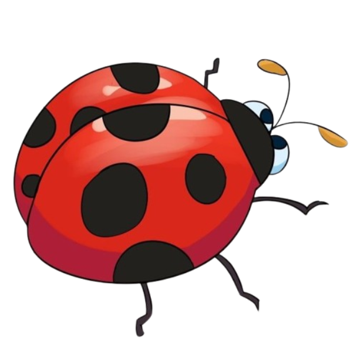
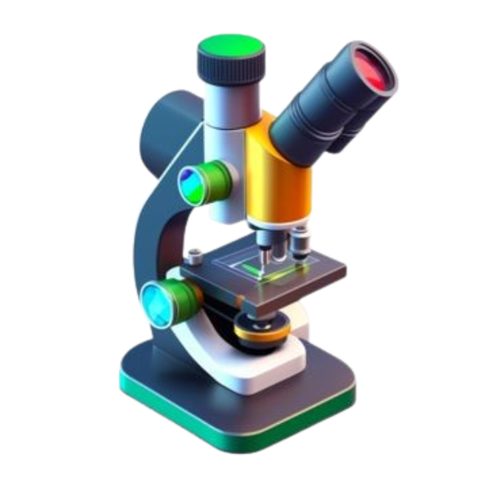

Background & Current State
Oyster Mushroom Cultivation in Sri Lanka
Oyster mushroom (Pleurotus ostreatus) cultivation has become an increasingly important livelihood for small-scale farmers in Sri Lanka due to its nutritional value, high market demand, and relatively simple growing requirements (Bandara et al., 2020). However, traditional cultivation methods still dominate, relying heavily on manual labor and subjective assessments such as judging temperature by physical sensation or estimating humidity levels by touch.
Environmental Control Challenges
Critical factors such as temperature, humidity, CO₂ concentration, and light intensity play essential roles in mushroom growth and quality (Chang & Miles, 2004). Inaccurate or delayed responses to fluctuations result in suboptimal growth conditions, reduced yields, and increased susceptibility to pests and diseases. CO₂ buildup or improper humidity can stunt mushroom development or encourage contamination.
Pest & Contamination Issues
Pest infestations and contamination are major threats that are typically identified too late, leading to substantial crop losses and financial setbacks for farmers (Bandara et al., 2020). The labor-intensive nature of manual monitoring also limits scalability and sustainability, as farmers must devote significant time and energy to routine checks.
Research Gap & Challenges
Identified Gaps in Mushroom Farming Automation
- Lack of Real-Time Environmental Control: Most small-scale farms lack automated systems for continuous monitoring and control of critical environmental parameters.
- Manual Pest & Disease Detection: Early detection of pests and contamination is difficult with manual inspections, often discovered only after significant damage occurs.
- Inconsistent Yield Management: Without data-driven insights, farmers cannot optimize fruiting cycles or anticipate environmental imbalances.
- Scalability Issues: Traditional monitoring methods are labor-intensive and limit farm expansion for small-scale cultivators.
- Limited Affordable Automation Solutions: Existing IoT and automation solutions are often too expensive for small-scale rural farmers in developing countries like Sri Lanka.
- Lack of Integrated Systems: Most solutions focus on individual challenges rather than providing a holistic, integrated approach combining sensing, prediction, and automated response.
Research Problem & Solution
Main Problem Statement
How can small-scale oyster mushroom farmers in Sri Lanka achieve consistent, optimized yields and prevent crop losses through automated, affordable environmental monitoring, intelligent pest management, and early contamination detection?
Our Solution Approach
We propose a comprehensive Smart Mushroom Incubation System equipped with:
- Real-time IoT Sensors: Continuous monitoring of temperature, humidity, CO₂, light, pH, and moisture levels
- Machine Learning Prediction: ML models to predict optimal fruiting readiness and detect substrate imbalances
- Computer Vision Detection: Automated pest and contamination detection using cameras and CNN algorithms
- Automated Response Systems: Automatic light control and neem spraying for pest management
- Farmer-Centric Mobile/Web Interface: Real-time alerts, advisories, and visual insights for timely interventions
Research Objectives
Main Objective
To design and develop a smart, IoT-based mushroom incubation system that enhances yield, ensures consistent quality, and promotes sustainable farming practices for small-scale oyster mushroom cultivators in Sri Lanka by enabling real-time environmental monitoring, automated control, and early detection of pests and contamination.
Predictive Fruiting System
Develop ML-based fruiting prediction combining real-time environmental sensing (CO₂, temperature, humidity) to forecast optimal fruiting timing and automate light control for enhanced yields.

Smart Pest Management
Implement automated pest detection using mobile camera systems and computer vision, with instant farmer alerts and automated neem spraying response in affected areas.
Substrate Advisory System
Create ML-powered advisory for moisture and pH management, providing real-time recommendations to prevent substrate imbalances and optimize growing conditions.

Contamination Detection
Develop CNN-based early contamination detection system using image analysis and real-time alerts with location information to prevent crop losses.
Methodology & Approach
Research Methodology
The project utilizes a multidisciplinary, data-driven approach combining agricultural knowledge, IoT integration, and machine learning:
- Primary Data Collection: Direct engagement with small-scale oyster mushroom farmers across Sri Lanka through farm visits, interviews, and field observations to understand challenges and requirements.
- Sensor Integration & Data Logging: Deploy IoT sensors (temperature, humidity, CO₂, light, pH, moisture) to collect real-time environmental data from cultivation environments.
- Image Collection: Use mobile camera systems to capture mushroom images from multiple angles and lighting conditions for contamination and pest detection training datasets.
- Machine Learning Model Development: Train predictive models for fruiting readiness, substrate conditions, and anomaly detection using collected environmental and image data.
- System Integration: Connect all hardware (sensors, cameras, controllers) to a central processing unit with cloud connectivity for data transmission and analysis.
- Mobile/Web Interface Development: Create farmer-friendly interface with real-time alerts, visual insights, and advisory recommendations.
- Field Testing & Validation: Deploy system in partner farms and compare ML-based automation against traditional manual methods to validate performance improvements.
- Iterative Improvement: Collect farmer feedback and continuously retrain models to enhance accuracy and system adaptability across different farm conditions.
Technologies & Components
IoT & Sensors
- ESP32 Microcontrollers
- Temperature & Humidity Sensors
- CO₂ Sensors
- pH & Moisture Sensors
- Light Intensity Sensors
- Cameras for Visual Monitoring
Machine Learning & AI
- PyTorch
- CNN for Image Analysis
- Time-Series ML Models
- OpenCV for Image Processing
Cloud & Backend
- Python Flask / Django
- Cloud Platform (Google Cloud)
- MQTT for IoT Communication
- Database (Firebase)
- RESTful APIs
Frontend & Interface
- React
- Mobile App (React Native)
- Real-time Visualization
- Mobile-Responsive Design
Automation & Control
- Scheduling Algorithms
- Alert Notification Systems
Development Tools
- Git & GitHub
- VS Code / Antigravity
- Google Colab
- Testing Frameworks